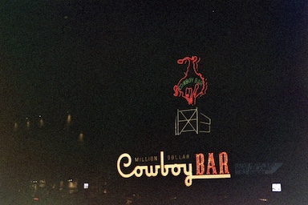
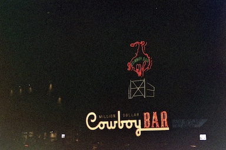
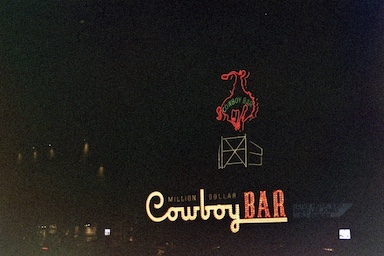

- What questions will your visitors expect your site to answer for them? Each visitor can expect to see the world through my lens, literally, and get a little glimpse of my vision and interpretation of everything that surrounds us. They can see with their one eyes why a film picture would never be the same as a digital one and they will learn more about the process of shooting film. They will learn what “happy accidents mean” and how devastating can be when you wait weeks for some picture to get back from developing and they are nothing from what you expected. "
What types of activities will visitors want to complete on your site? Come to connect with others, socialize and see different places around the world through film pictures. Anyone would be able to post and tell their stories through pictures and they could socialize with people who share the same passion. They can also meet with other photographers from around they city and share their passion and then post the result and tell the story. “ Kodak sells film, but they don't advertise film; they advertise memories.” Theodore Levitt -
Site planContactInstagram


 
